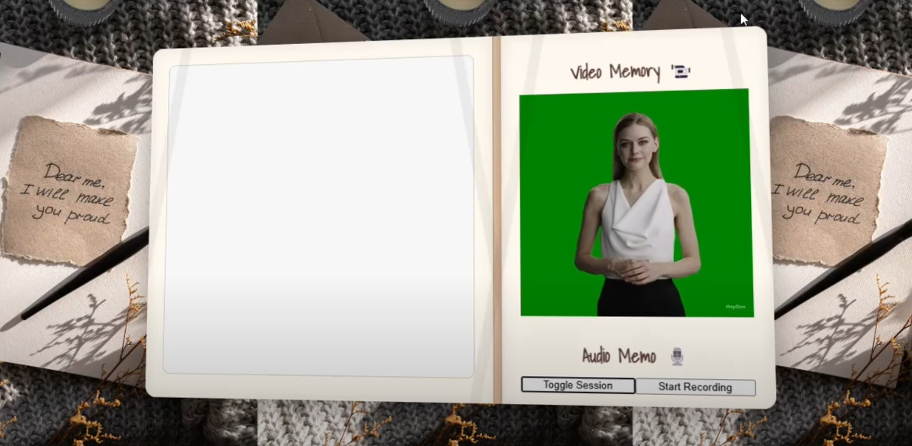
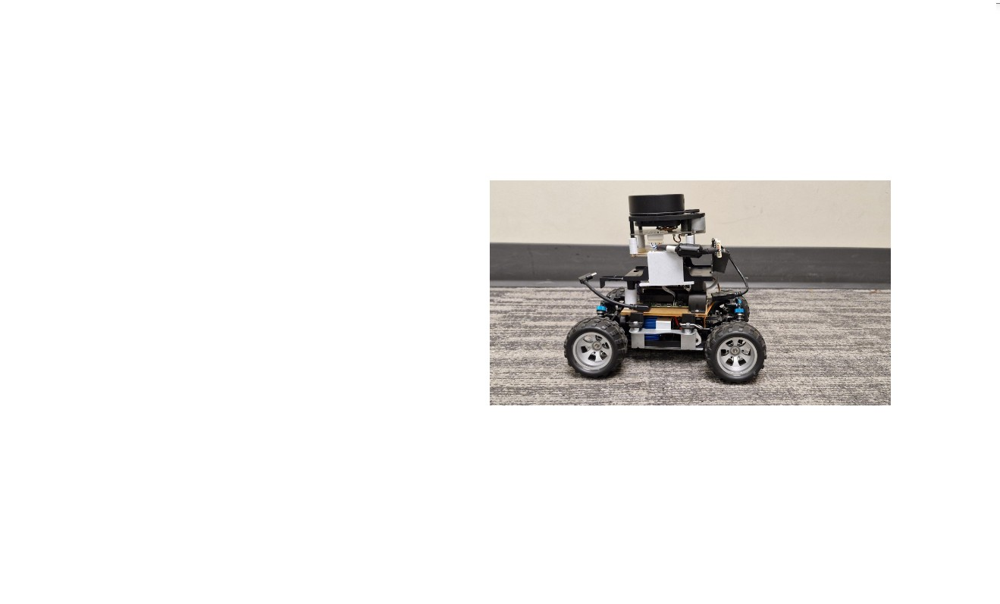
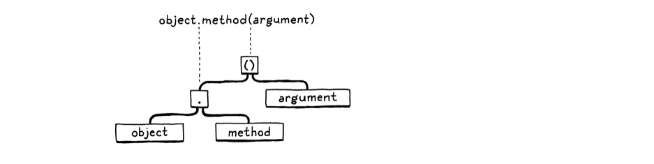
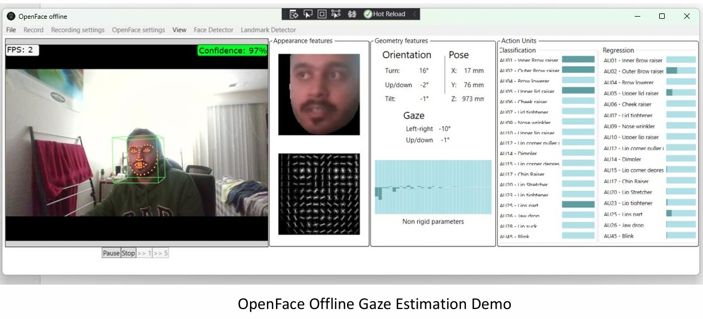
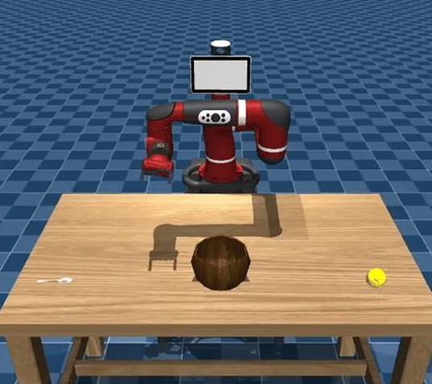
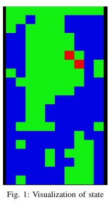
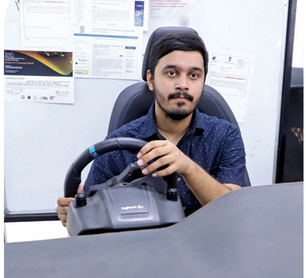
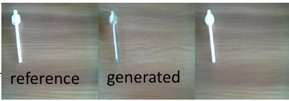
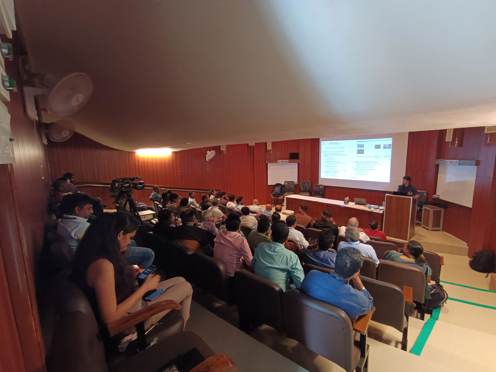

Applied Projects.
Beyond academic research, I build software systems—from interpreters to autonomous driving pipelines—that bridge the gap between theory and execution.

Ansh.AI: Conversational Diary
An emotional sounding board and personal logging system. Awarded 2nd place in the AI Track at HackCU11.

AWS DeepRacer Autonomous Driving
Full ROS 2 autonomous pipeline covering perception (lane detection) and PID control loops.

AHRI: Dual Task Modalities
A comparative study on human performance and cognitive load during concurrent dual-task robotic scenarios.

Lox Language Interpreter
Full end-to-end interpreter implementation including scanner, parser, and tree-walk evaluator.

V-BIKES Collision Detection
Hardware-based safety system explicitly designed for two-wheeler urban environments.

End-to-end Frame to Gaze Estimation
Literature review and "End-to-end Frame-to-gaze" CVPR paper presentation for graduate robotics seminar.

POMDP Frameworks for Autonomy
Presentation on Partially Observed Markov Decision Processes and their application in decision-making.

Decision Making under Uncertainty
Research paper on decision-making strategies and algorithms for safety-critical autonomous systems.

UNESCO Report on AI & Education
UNESCO-commissioned report examining the global impact of artificial intelligence on future learning.

BEL Industry Workshop: Perception
Industrial session covering the practical adoption of AI-driven planning pipelines in manufacturing.

Advances in Visual-Language Models
Explored multimodal fusion, promptable VLM architectures, and evaluation for embodied perception.